Famous Scientists
In this section, we celebrate the brilliant minds that have shaped our understanding of the world through science. From groundbreaking discoveries to revolutionary theories, these scientists have made significant contributions across various fields, including physics, chemistry, biology, and more.
Here, you will find a curated list of renowned scientists, along with brief descriptions of their achievements and impacts on science and society. Whether you are a student, educator, or simply a science enthusiast, we hope this page inspires you to learn more about the remarkable individuals who have advanced human knowledge and continue to influence our lives today.
Explore their stories, and discover how their work has paved the way for future generations of scientists!
Aristotle (384-322 BC)
Aristotle was a Greek philosopher and polymath whose works have had a profound influence on various fields of knowledge, including metaphysics, ethics, politics, and natural sciences. He is often referred to as the "father of Western philosophy."
Born in Stagira, Greece, Aristotle studied under Plato in Athens. After Plato's death, he founded his own school, the Lyceum, where he taught and conducted research. Aristotle emphasized empirical observation and logic, laying the groundwork for the scientific method. His writings on biology, physics, and ethics shaped the intellectual landscape for centuries. Aristotle’s belief that knowledge comes from sensory experience marked a shift from abstract theorizing to a more observational approach, influencing both science and philosophy.
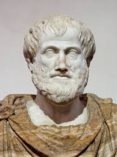
Democritus (460-370 BC)
Democritus was an ancient Greek philosopher known for his contributions to the theory of atomism. He proposed that everything in the universe is composed of small, indivisible particles called atoms.
Little is known about Democritus's life, but he traveled extensively, which influenced his thinking. He believed that atoms were eternal, indestructible, and varied in shape and size, which accounted for the different properties of matter. His ideas were largely ignored during his lifetime, but they laid the groundwork for modern atomic theory. Democritus's vision of a universe made of tiny particles foreshadowed the later discoveries of science, and he is often regarded as one of the first materialists in philosophy.
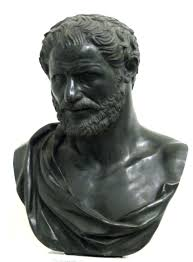
Ibn Al-Haytham (965-1040 AD)
Ibn Al-Haytham, also known as Alhazen, was a Muslim scholar who made significant contributions to optics, mathematics, and astronomy. He is often referred to as the "father of optics."
Born in Basra, Iraq, Ibn Al-Haytham studied various sciences and wrote extensively on optics, where he emphasized experimental methods. His famous work, "Book of Optics," explored the nature of light, vision, and how lenses work. He conducted experiments on refraction and reflection, leading to a better understanding of how we perceive images. His insistence on using experimentation as a basis for scientific inquiry paved the way for the modern scientific method. Ibn Al-Haytham's work was influential in both the Islamic Golden Age and the European Renaissance.
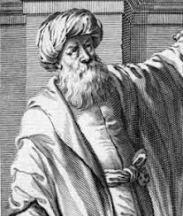
Galileo Galilei (1564-1642)
Galileo was an Italian astronomer, physicist, and mathematician who played a crucial role in the Scientific Revolution. He is often referred to as the "father of modern observational astronomy."
Born in Pisa, Italy, Galileo made significant advancements in the fields of physics and astronomy. He improved the telescope and used it to make groundbreaking discoveries, such as the moons of Jupiter, the phases of Venus, and sunspots. His support for the heliocentric theory, which posited that the Earth revolves around the Sun, brought him into conflict with the Catholic Church. In 1633, he was tried for heresy and placed under house arrest for the rest of his life. Despite these challenges, Galileo's work laid the foundations for modern physics and changed our understanding of the universe.

Isaac Newton (1642-1727)
Newton was an English mathematician, physicist, and astronomer who is widely recognized as one of the most influential scientists of all time. He formulated the laws of motion and universal gravitation.
Newton was born in Woolsthorpe, England, and he studied at Cambridge University. His groundbreaking work, "Mathematical Principles of Natural Philosophy," published in 1687, introduced the three laws of motion and the law of universal gravitation. Newton's ability to explain the motion of celestial bodies and earthly objects using mathematics revolutionized science. He also made significant contributions to calculus, optics, and mechanics. His work laid the groundwork for classical mechanics and dominated the scientific view of the physical universe for the next three centuries.

James Clerk Maxwell (1831-1879)
Maxwell was a Scottish physicist best known for his formulation of the classical theory of electromagnetic radiation. He made significant contributions to the understanding of electricity, magnetism, and thermodynamics.
Born in Edinburgh, Scotland, Maxwell developed his groundbreaking equations, known as Maxwell's equations, which describe how electric and magnetic fields interact. His work unified previously separate theories of electricity and magnetism into a single framework. Maxwell also contributed to the kinetic theory of gases and the study of color vision. His predictions about electromagnetic waves laid the foundation for future technologies, including radio and television, earning him a place as one of the key figures in physics.
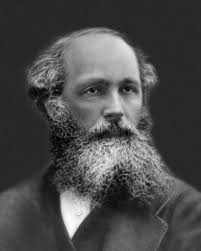
Max Planck (1858-1947)
Planck was a German physicist who is best known for his role in the development of quantum theory, which revolutionized our understanding of atomic and subatomic processes.
Born in Kiel, Germany, Planck's research focused on blackbody radiation. In 1900, he proposed that energy is emitted in discrete packets called "quanta," which challenged classical physics. This idea laid the groundwork for quantum mechanics, a field that would change the landscape of physics. Planck received the Nobel Prize in Physics in 1918 for his groundbreaking work. Despite facing opposition from the scientific community, his contributions opened new avenues for understanding the behavior of matter and energy at the quantum level.
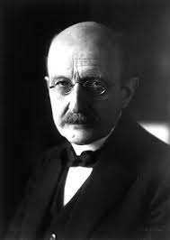
Niels Bohr (1885-1962)
Bohr was a Danish physicist who made foundational contributions to understanding atomic structure and quantum mechanics, especially regarding electron behavior.
Born in Copenhagen, Denmark, Bohr developed the Bohr model of the atom, which introduced the idea that electrons orbit the nucleus at specific distances and can jump between these orbits by absorbing or emitting energy. This model helped explain the spectral lines of hydrogen. Bohr's work earned him the Nobel Prize in Physics in 1922. He later contributed to the development of quantum mechanics and the understanding of atomic structure, and he was involved in the Manhattan Project during World War II. His philosophical insights on the nature of science and its implications have had a lasting impact.
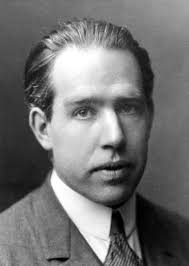
Werner Heisenberg (1901-1976)
Heisenberg was a German physicist who is best known for formulating the Heisenberg Uncertainty Principle, a fundamental concept in quantum mechanics.
Born in Würzburg, Germany, Heisenberg made significant contributions to quantum theory and matrix mechanics. His uncertainty principle states that certain pairs of physical properties, like position and momentum, cannot be simultaneously measured with arbitrary precision. This principle has profound implications for the nature of reality and knowledge in quantum physics. Heisenberg received the Nobel Prize in Physics in 1932. His work laid the foundation for modern quantum mechanics and challenged classical notions of determinism.
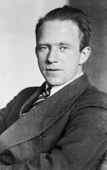
Albert Einstein (1879-1955)
Einstein was a German-born physicist who is best known for developing the theory of relativity, which revolutionized our understanding of time, space, and gravity.
Born in Ulm, Germany, Einstein later moved to Munich and then to Switzerland. His famous equation, E=mc², demonstrated the equivalence of mass and energy. He received the Nobel Prize in Physics in 1921 for his explanation of the photoelectric effect, a key phenomenon in quantum theory. Einstein's theories reshaped modern physics and influenced various fields, including cosmology and quantum mechanics.

Thomas Young (1773-1829)
Young was an English polymath known for his work in physics, particularly the wave theory of light and the concept of the interference of waves.
Born in Milverton, England, Young conducted experiments demonstrating that light behaves as a wave, particularly through his famous double-slit experiment. This work was pivotal in establishing the wave theory of light, competing with the particle theory. He also made significant contributions to understanding human vision, including the trichromatic theory of color. Young's interdisciplinary approach laid the groundwork for future research in both physics and biology.
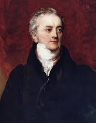
Henry Cavendish (1731-1810)
Cavendish was an English scientist known for his discovery of hydrogen and his work in electricity and gas density.
Born in Nice, France, Cavendish was a reclusive scientist who conducted numerous experiments in his laboratory. He is best known for measuring the density of the Earth and determining the composition of gases, including hydrogen. His meticulous experiments laid the groundwork for later discoveries in chemistry and physics. Cavendish's work on electrical charge and capacitance contributed to the development of the field of electromagnetism.
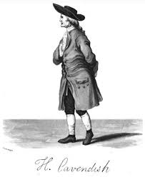
Robert Millikan (1868-1953)
Millikan was an American experimental physicist who is best known for his oil-drop experiment, which measured the elementary charge of the electron.
Born in Morrison, Illinois, USA, Millikan's oil-drop experiment provided precise measurements of the charge of electrons and confirmed the quantization of electric charge. He received the Nobel Prize in Physics in 1923 for his work on the photoelectric effect, further establishing the principles of quantum theory. Millikan's research had a significant impact on the fields of atomic and molecular physics.
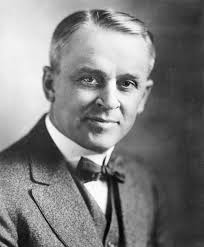
Peter Higgs (1929-present)
Higgs is a British theoretical physicist who proposed the existence of the Higgs boson and the mechanism that gives mass to elementary particles.
Born in Newcastle upon Tyne, England, Higgs developed his theory in the 1960s, predicting the Higgs boson as a necessary component of the Standard Model of particle physics. His work laid the foundation for the discovery of the Higgs boson at CERN. Higgs's contributions have had profound implications for our understanding of the universe and the fundamental forces that govern it.
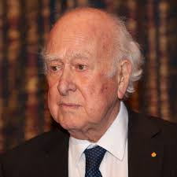
François Englert (1932-present)
Englert is a Belgian theoretical physicist known for his work on the Higgs mechanism, which describes how particles acquire mass.
Born in Brussels, Belgium, Englert, along with Peter Higgs, developed the theory of the Higgs boson in the 1960s. Their work was pivotal in establishing the framework of particle physics. In 2013, Englert and Higgs were awarded the Nobel Prize in Physics for their contributions to the understanding of the origin of mass in elementary particles. Englert's research has had a lasting impact on theoretical physics and the pursuit of knowledge about the fundamental structure of matter.
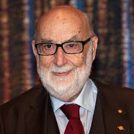
Rainer Weiss (1932-present)
Weiss is an American physicist known for his contributions to gravitational wave detection and the LIGO project.
Born in Berkshire, Massachusetts, USA, Weiss played a crucial role in developing the LIGO (Laser Interferometer Gravitational-Wave Observatory) project, which successfully detected gravitational waves in 2015. This groundbreaking discovery confirmed a key prediction of Einstein's general theory of relativity and opened a new era in astrophysics. Weiss's work has had profound implications for our understanding of the universe.
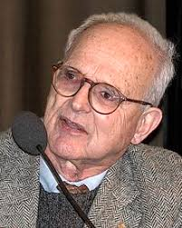
Barry C. Barish (1927-present)
Barish is an American physicist known for his leadership in the LIGO project and contributions to particle physics.
Born in Pasadena, California, USA, Barish played a pivotal role in the design and implementation of LIGO, which detected gravitational waves. He served as the project director and led the team that made the landmark discovery in 2015. Barish received the Nobel Prize in Physics in 2017 for his contributions to the detection of gravitational waves. His leadership and vision have significantly advanced the field of physics.
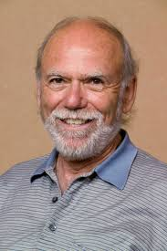
Kip S. Thorne (1930-present)
Thorne is an American theoretical physicist known for his work on gravitational physics and astrophysics, particularly in the context of black holes.
Born in Logan, Utah, USA, Thorne's research has focused on the implications of general relativity for black holes and gravitational waves. He was instrumental in the LIGO project and contributed to the understanding of how gravitational waves carry information about cosmic events. Thorne received the Nobel Prize in Physics in 2017 alongside Barish and Weiss for the detection of gravitational waves. His work has opened new avenues for exploring the universe.
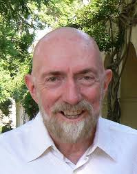
Georg Simon Ohm (1789-1854)
Ohm was a German physicist and mathematician best known for formulating Ohm's Law, which relates voltage, current, and resistance in electrical circuits.
Born in Erlangen, Germany, Ohm conducted experiments that led to the formulation of his law in 1827. Ohm's Law states that the current through a conductor between two points is directly proportional to the voltage across the two points and inversely proportional to the resistance of the conductor. His work laid the foundation for electrical engineering and circuit theory, earning him a significant place in the history of physics.
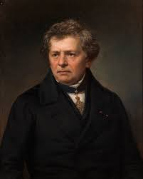
Go to the Top